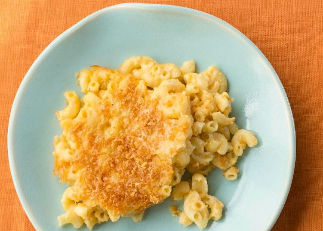

Homemade Mac and Cheese

Easy and delicious, mac and cheese makes a quick but hearty dinner option.
Dating back to 14th century Italy and medieval England, this dish of macaroni
pasta covered in a cheese sauce has become a staple in mealtime favourites.
Whilst nowadays there are various instant mac and cheese products, nothing quite
beats homemade mac and cheese, esspecially when topped with buttered breadcrumbs
and with this easy and quick recipe there's no need for the instant stuff.
Ingredients
- 8 ounches uncooked macaroni noodles
- 1/4 cup salted butter
- 3 tbsp plain flour
- 2 1/2 cups of milk, more as needed
- 2 cups shredded Cheddar cheese
- 1/2 cup finelygrated Parmesan cheese
- salt and ground black pepper to taste
For the bread crump topping
- 2 tbsp salted butter
- 1/2 cup dry bread crumbs
- 1 punch ground paprika
Steps
- Preheat oven to 350 degrees F (175 degrees C). Grease an 8-inch
sqaure baking dish
- Fill a large pot with lightly salted water and bring to boil. Add the
macarnoni noodles and allow to shimmer, stirring occasionally, until tender
but firm to bite. This should take about 8 minutes, the noodles will finish
cooking in the oven. Drain and transfer the noodles to the baking dish.
- Whilst the macaroni is shimmering, melt the 1/4 cup of butter in a medium skillet over
a low heat. Whisk in the flour and stir until the mixture becomes paste-like
and a light golden brown color. This should take about 3-5 minutes.
- Gradually whisk 2 1/2 cups milk into the flour mixture,
and bring to a simmer. Stir in shredded Cheddar and finely grated Parmesan
cheeses; season with salt and pepper. Cook and stir over low heat until cheese
is melted and sauce has thickened, 3 to 5 minutes, adding up to 1/2 cup
more milk if needed. Pour cheese sauce over macaroni and stir until
well combined.
- Make the bread crumb topping: Melt 2 tablespoons butter in a skillet over
medium heat. Add bread crumbs; cook and stir until well coated and browned.
Spread bread crumbs over macaroni and cheese, then sprinkle with paprika.
- Bake in the preheated oven until topping is golden brown and macaroni and cheese
is bubbling, about 30 minutes.